Bridge Groups Branding
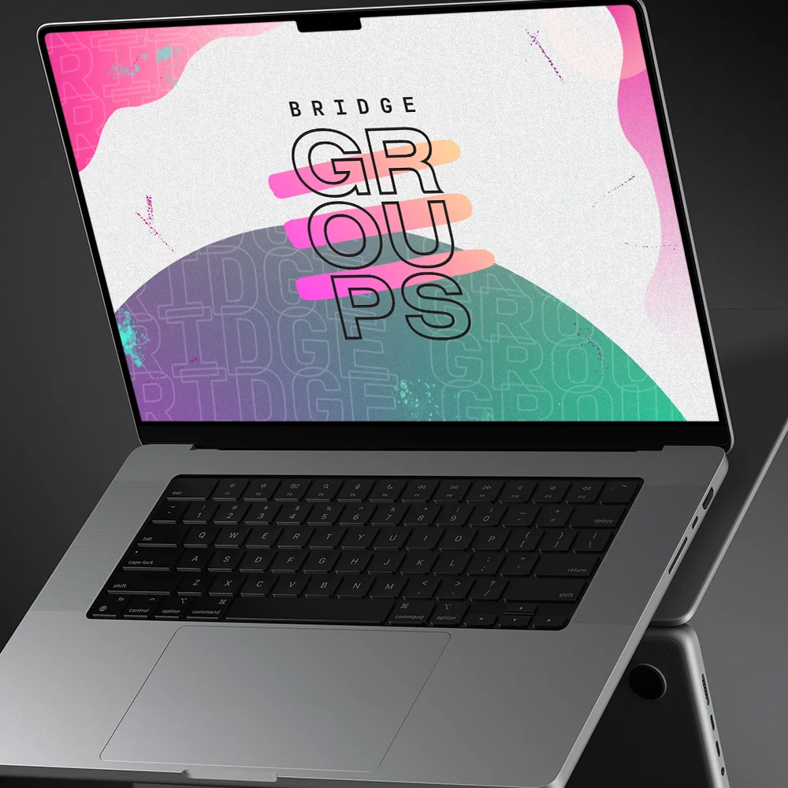
The Ask
Forest Hill experienced a lot of change in the years leading up to the 2020 pandemic. Those organizational changes, along with the pandemic, left Forest Hill in need of a facelift. In rebranding their community groups — "Bridge Groups" — they wanted a visual identity that could signal a new day beginning.
They also wanted a brand that could reach a slightly younger demographic. We set out to create an identity that screamed life and joy. Even while some groups were meeting over video conference, we wanted to bring excitement to a group — even a Zoom one.
The Result
A vibrant, bold redesign filled with energy and movement. The vibrancy and people-forward design brought life to digital-only meeting spaces, and the in-person elements at events announced that something new was here — and you didn't want to miss it.
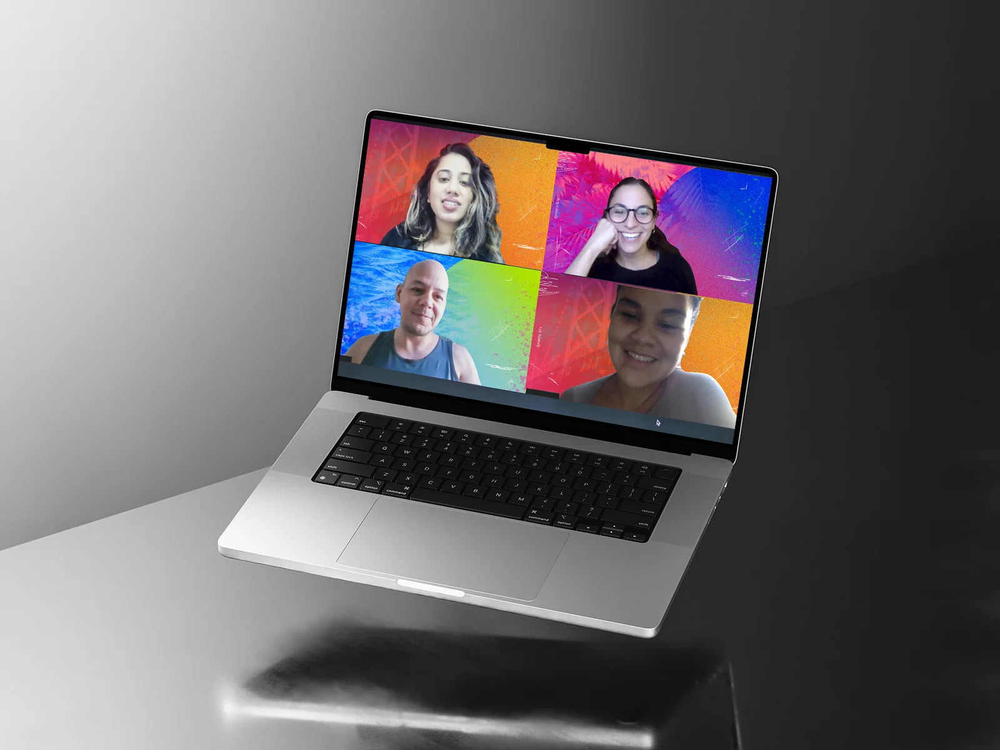
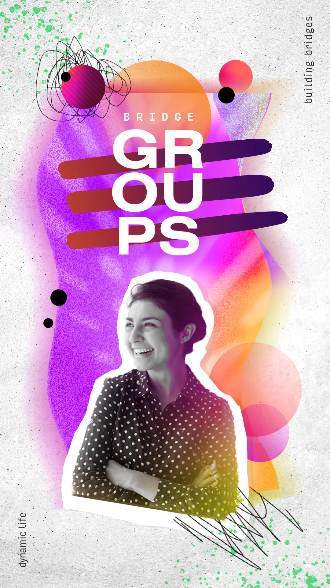
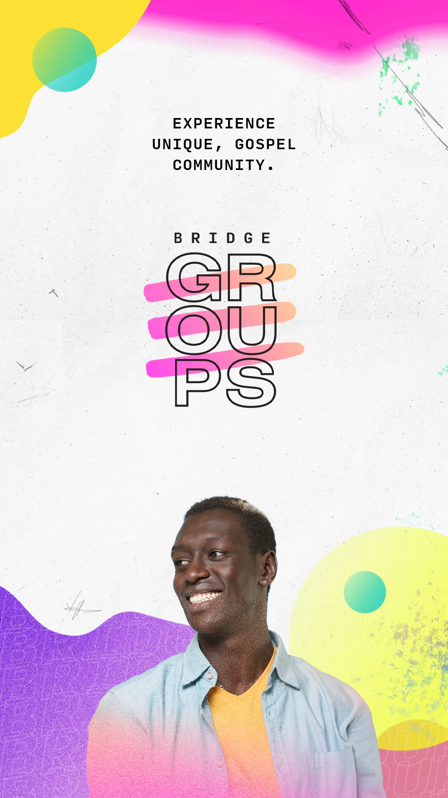
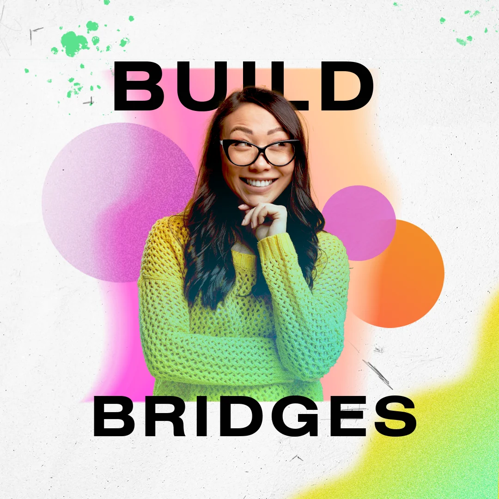
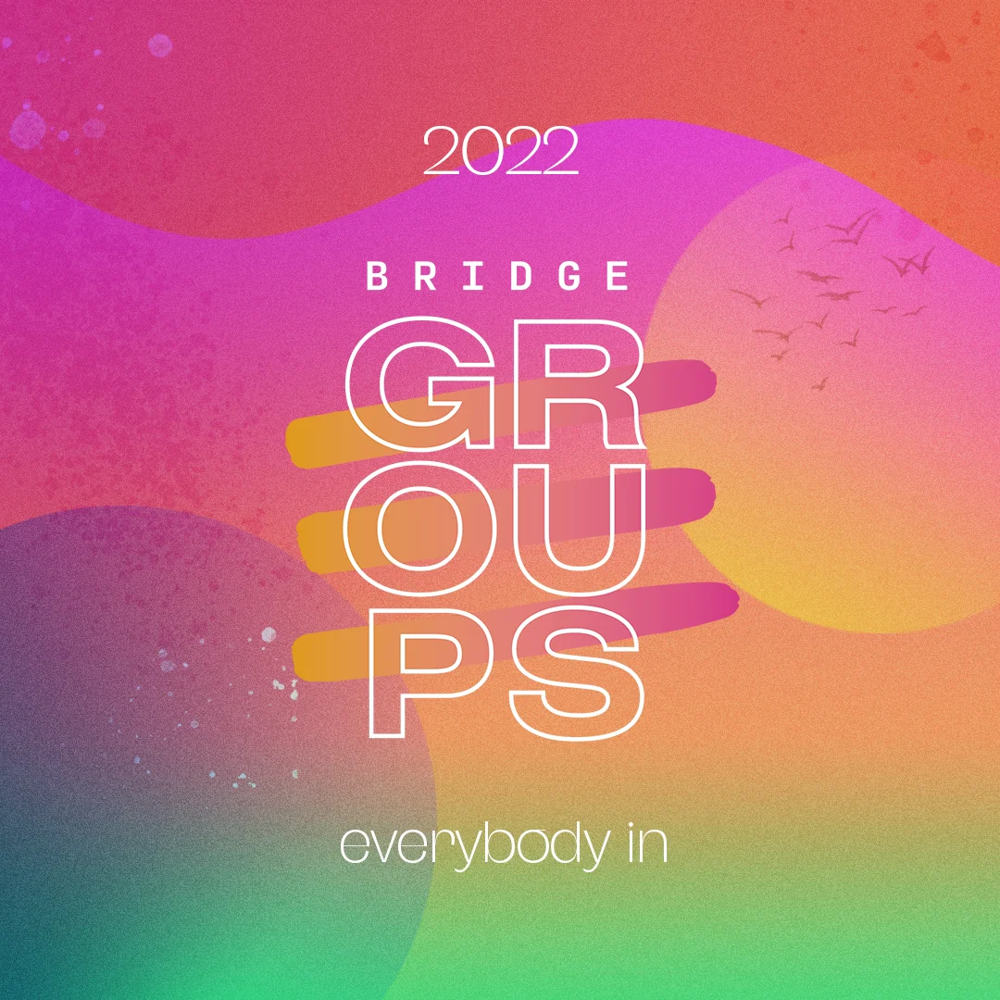
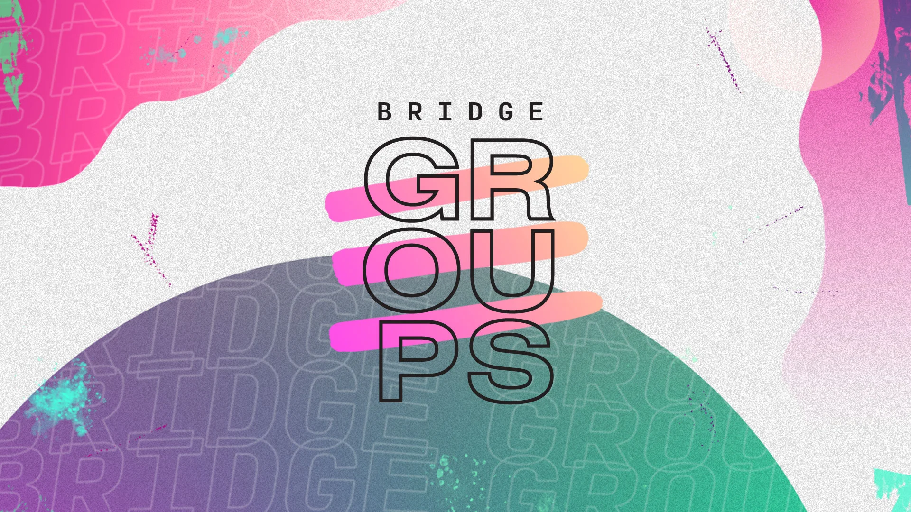
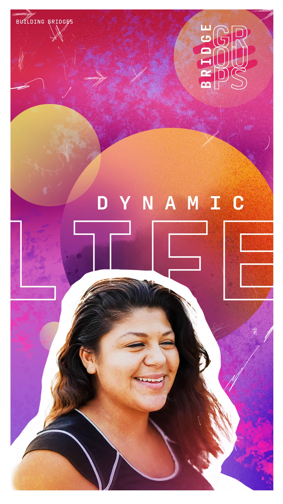
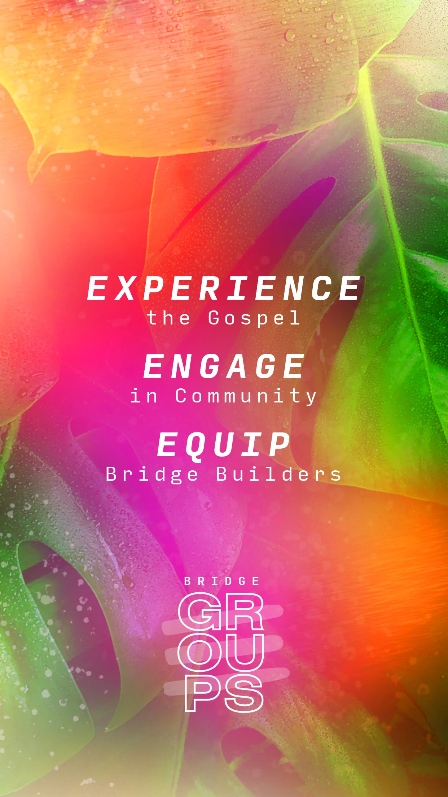
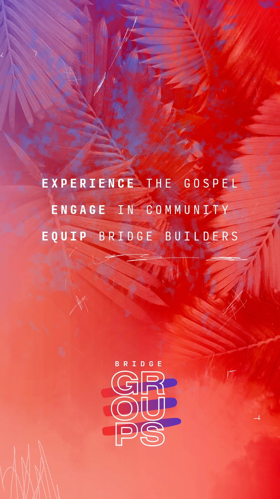
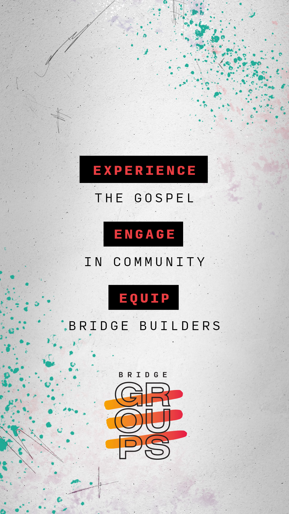
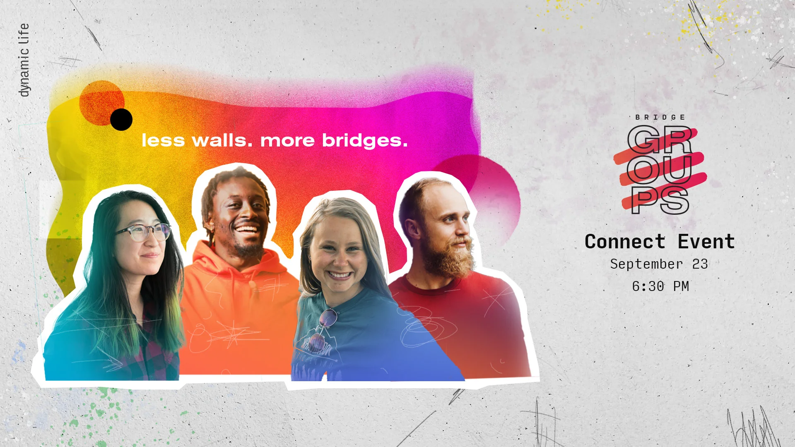
Credits
- Creative / Art Direction: Jared Hanline
- Graphic Design: Erin Swanson, Juan Gonzalez